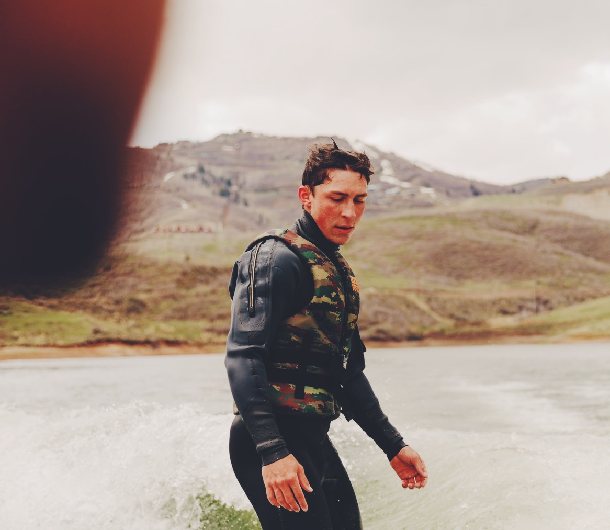
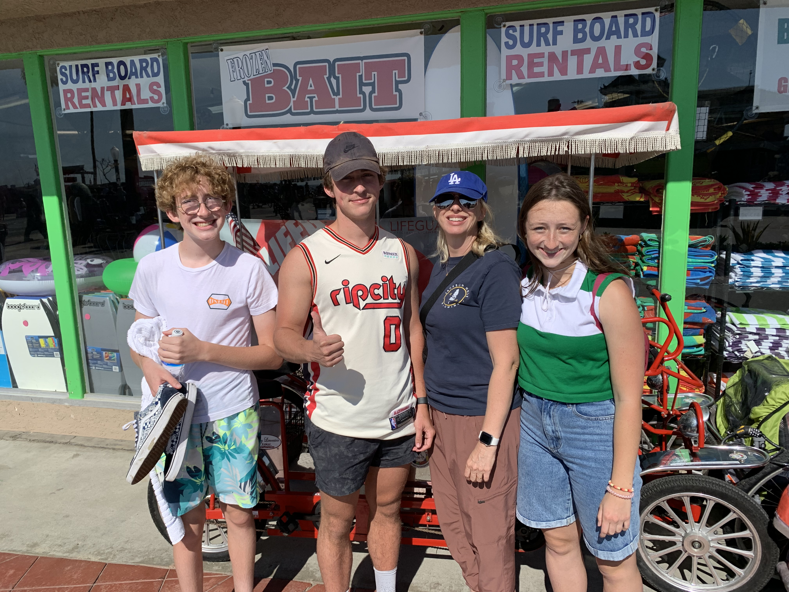
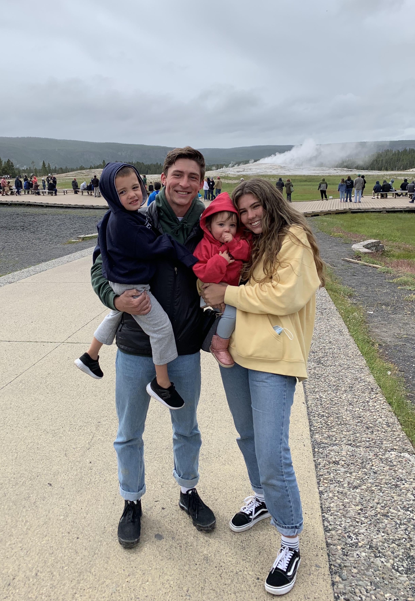

Ever since I can remember, maps have been important to me. A large map hangs in my grandparents’ home with pins representing all of the places my grandfather has contacted people via his Ham radio. The lights and sounds of my grandfather’s radio room were intriguing. It was like a forbidden, secret laboratory that I was not allowed to enter. I wondered what transpired in that room. Perhaps he was communicating with aliens from outer-space? I often drifted off to sleep to the sound of him calling,“This is K7SX, do you copy?”
When I turned 10 years old, my grandfather gave me an atlas, and I too dreamed of communicating with people all over the world, even in the most remote areas. I was too young to take the Ham radio licensing exam, but that didn’t stop me from learning all I could about wavelength, frequency, bandwidth and how waves traveled through time and space:. I simply couldn’t get enough.
My grandfather’s passion was contagious, and it became a thread that connected me to him. At age 12 I took the ham radio licensing exam and became one of the youngest people in the US ever to pass .I was assigned the call sign KF7JOS and made my first call. There is something absolutely magical about pressing a button and transmitting your voice over millions of miles of space. Later on, my communication skills were expanded as I served my mission and learned to express myself in Malay, Indonesian, Chinese, and even ASL.
Communicating with people is my passion. I love to learn about their interests, hobbies, lifestyles and culture. While at BYU, I will continue to develop my passion for communicating and connecting with others. Many service opportunities come as a result of learning and listening to the people around you. My love of learning and communication will enable me to serve others and continue to grow academically and spiritually while at BYU. Signing off, KF7JOS
Find more about my story here
Back to the top